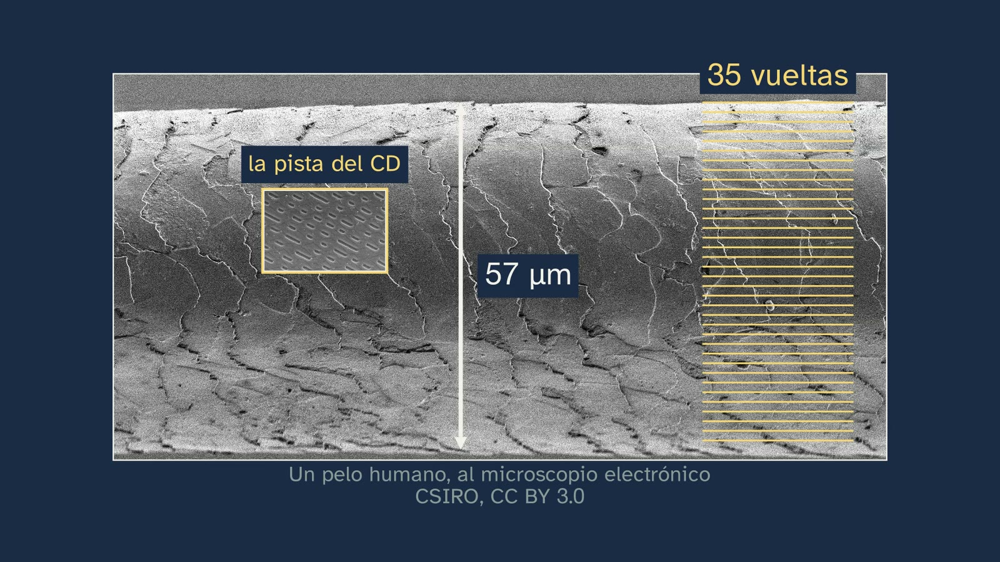
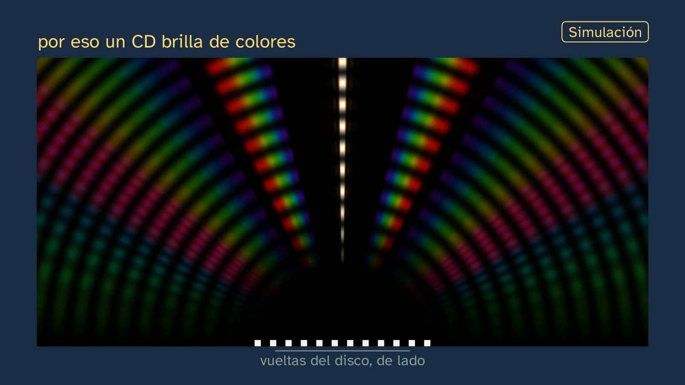

Un espectroscopio en casa
En pocas palabras
Es la clase de laboratorio que pone a trabajar lo que explicó la clase 3: un sólido muy caliente da un espectro continuo, y un gas poco denso, rayas. El instrumento es un CD, que es una red de difracción. La clase tiene un solo hilo, con lo que el alumnado tiene cerca: su pantalla, un CD, las luces de su casa, la luz del Sol y su propio ojo. Empieza recuperando los dos espectros y corrigiendo los tres ejercicios de la clase 3. El gancho es una afirmación que se puede sentir delante de la pantalla: en tu pantalla no hay ni un solo punto amarillo.
Después, por qué un disco separa la luz. Se ve la pista de un CD al microscopio electrónico, con sus vueltas a 1,6 µm, y un pelo humano real a la misma escala: mide 57 µm y le caben 36 vueltas. En una simulación de ondas, las onditas de cada vuelta sólo se refuerzan en ciertas direcciones, y cada color en la suya. El rojo sale más inclinado porque, para reforzarse, la ondita de una vuelta tiene que llegar una longitud de onda por detrás de la de su vecina, y con la onda más larga eso pide mirar más de lado.
Se dibuja el espectroscopio de caja, el mismo en toda la clase. Con él se miran las luces de casa:
- el filamento, que al calentarse suma colores;
- el led, un led azul (Nobel de 2014) con un polvo amarillo;
- el fluorescente, cuyas rayas encajan con la tabla del mercurio del NIST.
Después vienen la pantalla (tres franjas; su amarillo es verde más rojo, y donde caería el sodio hay un hueco), el ojo (tres conos que reciben lo mismo del sodio que de la mezcla de la pantalla) y el Sol, sin mirarlo nunca (el disco hace de espejo): un continuo, como el del filamento, cruzado por las rayas de Fraunhofer. Termina con el error típico («el blanco es un color del arcoíris») y una pregunta abierta: ¿engañaría tu pantalla a un ojo de cuatro conos, como el de muchas aves?
Lo que se ve es real o se dice que está calculado. Las fotos son de Wikimedia Commons, con licencia libre y su autor en pantalla. Lo rotulado «Simulación» se calcula con espectros medidos y publicados (ver «Lo que la clase simplifica»).
Currículo
- Saber básico (bloque A): «Estructura electrónica de los átomos tras el análisis de su interacción con la radiación electromagnética: explicación de la posición de un elemento en la tabla periódica y de la similitud en las propiedades de los elementos químicos de cada grupo».
- Competencias específicas: CE1 (explicar fenómenos cotidianos con leyes y teorías), CE2 (formular y validar hipótesis con la experimentación y la búsqueda de evidencias) y CE3 (unidades, formatos e interpretación de la información; la seguridad en el trabajo experimental).
- Criterios de evaluación:
- 1.1: las luces de casa, explicadas con la teoría de la clase 3.
- 2.1: una hipótesis («los blancos no están hechos igual») puesta a prueba con cada luz.
- 2.2: dos métodos para una misma cuestión: la simulación y la foto real por un espectroscopio de mano del filamento y del bajo consumo; el espectroscopio y la foto de los subpíxeles para el amarillo de la pantalla.
- 3.3: leer espectros y tablas de longitudes de onda.
- 3.4: la seguridad: nunca al Sol, ni mirando sólo el disco, porque hace de espejo; el cúter, con un adulto.
Cómo está construida la clase
Capítulos del vídeo
Unos dieciséis minutos (16:24), en once capítulos. Sigue el modelo del departamento: predecir, observar y explicar, con una hipótesis de laboratorio que se recuerda tras cada dato.
| Capítulo | Qué pasa | Por qué así |
|---|---|---|
| Qué vamos a ver (0:00) | Abril saluda; el mapa del tema. La clase anterior prometió que el alumnado construiría el espectroscopio: en casa no sale a la primera, y hoy se enseña aquí, con fotos reales, simulaciones y el montaje para los más manitas. | Respetar lo prometido diciendo la verdad. |
| Lo que ya sabes (0:39) | ¿Qué espectro da un sólido muy caliente? ¿Y un gas poco denso? Pausa. Continuo y de emisión. | Recuperar lo que hoy se busca. |
| Las soluciones de la clase anterior (1:24) | El fotón del sodio (3,38·10⁻¹⁹ J), el sodio frente al litio y 434 nm (del 5 al 2). | Breves y con su enunciado. |
| Ni un punto amarillo (2:30) | El gancho: una lupa (dibujada) dentro del amarillo enseña puntitos rojos y verdes. ¿Cómo puede ser? Con un CD, que separa la luz como el prisma de Bunsen y Kirchhoff. La hipótesis. | Una sorpresa que el alumnado tiene delante. |
| Lo que esconde un CD (3:22) | La pista al microscopio electrónico (1,6 µm entre vueltas) y, alejándose a la misma escala, un pelo real (57 µm, 36 vueltas). La espiral desenrollada (más de 20 000 vueltas, 5,4 km). Simulación de ondas: lejos sólo quedan los haces en que las onditas se refuerzan; el rojo, más inclinado, y por qué: una longitud de onda de retraso entre vueltas vecinas. El ángulo mide la longitud de onda. | Que se sienta el tamaño, y la idea de onda de la clase 3 explicada desde dentro. La fórmula, d·sen θ = λ, queda para 2.º. |
| Un espectroscopio de disco (5:47) | El espectroscopio de caja, dibujado pieza a pieza: caja, disco inclinado, rendija, ventanita; si entra luz por un agujero, un velo de colores lo tapa todo. Para los más manitas, el montaje paso a paso. | Un único diseño en toda la clase, y un solo disco: el CD. |
| Las luces de tu casa (7:12) | Predicción con tres luces que parecen el mismo blanco. El filamento: un regulador lo calienta y el espectro crece desde el rojo. El led: el chip azul solo y, al cubrirlo el polvo, la banda del verde al rojo. El fluorescente: sus rayas encajan con la tabla del mercurio del NIST; la roja sale del polvo, que convierte el ultravioleta en luz. Una foto real del filamento y de una fluorescente de bajo consumo. | Los datos, uno a uno, con lo que dicen de la hipótesis. |
| Tu pantalla, por dentro (10:21) | El blanco del móvil, tres franjas; una foto real por una red. Predicción con el amarillo (10:55): la azul se apaga y en 589 nm hay un hueco. El móvil recorre los colores y las franjas no se mueven. Fotos reales de los subpíxeles. El ojo: tres conos; la luz del sodio y la mezcla verde más rojo les llegan igual. | Lo que nadie cuenta: la pantalla funciona porque el ojo sólo tiene tres sensores; todo arcoíris en una pantalla es una imitación. |
| La luz del Sol (12:49) | Lo prometido en la clase 3: cómo mirarla sin peligro (al cielo, a una nube o a una pared al sol; nunca al Sol, porque el disco hace de espejo). Un continuo, como el del filamento, con las rayas de Fraunhofer: con un CD, las más fuertes (sodio y magnesio); al subir la resolución, miles. | Lo fundamental del tema, con la luz de siempre. |
| El error (13:48) | «La luz blanca es un color más del arcoíris»: cinco blancos (Sol, filamento, led, fluorescente y pantalla) se abren en cinco mezclas distintas. La hipótesis se cumple. | El error típico, desmontado con los datos de la clase. |
| Para practicar y seguir pensando (14:35) | Resumen, tres ejercicios, la pregunta abierta y la clase siguiente. | Las soluciones abren la clase 5. |




Puentes con otras materias. Física de 2.º: la red de difracción con números (d·sen θ = m·λ). Biología: la visión del color (tres tipos de conos; metamería; los cuatro conos de las aves). Tecnología y Digitalización: cómo fabrican el color las pantallas (RGB, OLED y LCD).
Plan de una sesión de 50 minutos
- Antes del vídeo (5 min). Las preguntas de «Antes de ver el vídeo» de la hoja del alumnado. Que cada cual diga qué cree que verá si mira una pantalla blanca con un CD.
- El vídeo, a trozos (22 min; dura unos 16). Pausar en cada predicción (hacia 0:50, 7:37 y 10:55) y en «Lo importante hasta aquí» (10:12).
- La actividad (18 min). El espectroscopio de caja, ya montado por el profesorado, o la construcción del IAC (ver «Una actividad para el aula»): mirar el tubo fluorescente del aula y, si es de día, el cielo por la ventana.
- Cierre (5 min). Los tres ejercicios y la pregunta abierta, para casa.
Lo que la clase simplifica, y por qué
- Por qué un disco separa los colores. Con ondas que se refuerzan o se borran y con el retraso de una longitud de onda entre dos vueltas vecinas; la ecuación de la red y los órdenes superiores quedan para 2.º. La simulación de ondas (rotulada) suma las ondas de doce vueltas cerca del disco y, lejos, dibuja todos los haces de la separación real de un CD, con la anchura de dieciséis vueltas: con luz verde, el de en medio y tres a cada lado (19°, 42° y 84°). El espectroscopio usa el primero; los demás son los órdenes superiores. El abanico del primero, con la luz de frente, de 400 a 650 nm: de 14,5° a 24,0°.
- El filamento que se calienta. La ley de Planck a cada temperatura. El visor ajusta su brillo a la luz que llega, como el ojo, para que se vea qué colores hay; el termómetro marca la temperatura real.
- Las simulaciones. Calculadas en
espectros.py, con el color de cada longitud de onda según las funciones CIE 1931 y a la resolución de un CD (unos 4 nm, con una rendija de 0,5 mm a unos 17,5 cm): - filamento: la ley de Planck;
- led: la mediana de 304 leds blancos cálidos medidos (PhotoLED, DTU, CC BY 4.0), con el pico azul separado del resto;
- fluorescente: las rayas del mercurio del NIST y las de los fósforos de un tubo tricolor, con intensidades aproximadas;
- pantallas: los primarios con los picos y anchuras publicados (Chen y otros, 2018);
- cielo: el espectro solar de Kurucz (2005), a 0,1 nm;
- conos: las curvas tipo de Govardovskii y otros (2000), con picos en 420, 530 y 560 nm; las de un ave, en 370, 445, 505 y 565 nm (dibujo).
- Las pantallas no son todas iguales. En los OLED (la mayoría de los móviles) el amarillo son dos bandas con un hueco en 589 nm; en los LCD con led blanco amarillo (YAG), la franja del verde al rojo es casi continua y sí hay algo de luz en 589 nm, pero ninguna raya como la del sodio. Lo que vale para todas: no tienen ningún subpíxel amarillo.
- La raya roja del fluorescente. Es del europio del polvo; que un sólido dé una raya tan fina se debe a que sus electrones 4f están apantallados por las capas 5s y 5p. La clase no entra ahí; las capas llegan en la clase 5.
Errores típicos y cómo se tratan
- «La luz blanca es un color más del arcoíris.» El blanco no tiene sitio en el arcoíris: no hay ninguna longitud de onda blanca. Cinco blancos y cinco mezclas distintas.
- «El CD tiene los colores.» El disco no pinta: separa los que trae la luz. Con luz de un solo color, sólo devuelve ese color.
- «Un led da rayas porque es electrónico.» Su luz sale de un chip azul y de un polvo, un sólido que brilla en muchos colores seguidos: continuo.
- «El ojo mide la longitud de onda.» Sólo tiene tres tipos de conos; dos luces distintas que los excitan igual se ven del mismo color.
Preguntas y soluciones
Las del vídeo
- ¿Qué espectro da un sólido muy caliente? ¿Y un gas poco denso que brilla? — Continuo; de emisión (rayas).
- ¿Cuál de las tres luces de casa dará rayas? — El fluorescente.
- Al poner amarillo en la pantalla, ¿se verá una raya amarilla, como la del sodio? — No: verde y rojo, con un hueco donde caería el sodio.
Para practicar (las soluciones abren la clase 5)
- Tres franjas, A, B y C: una llama de litio, un tubo fluorescente y una bombilla de filamento, en otro orden. ¿Cuál es cuál, y cómo lo sabes? — A, el litio: una sola raya roja (670,8 nm), la de un gas. B, el fluorescente: rayas del mercurio y de su polvo. C, el filamento: un continuo, el de un sólido muy caliente.
- La raya verde del mercurio, 546,1 nm: ¿energía de cada fotón? — 546,1 nm = 5,461·10⁻⁷ m; E = 6,63·10⁻³⁴ · 3,00·10⁸ / 5,461·10⁻⁷ = 3,64·10⁻¹⁹ J (con las constantes exactas, también 3,64·10⁻¹⁹ J).
- ¿Qué hace que el rojo salga del disco más inclinado que el violeta? — Para que las ondas de dos vueltas vecinas se refuercen, una tiene que llegar justo una longitud de onda por detrás de la otra. La onda del rojo es más larga, y ese retraso mayor sólo se consigue mirando más de lado: sale con un ángulo mayor (unos 24° frente a unos 15° con un CD).
La pregunta abierta. Muchas aves tienen cuatro tipos de conos, uno de ellos sensible al ultravioleta o al violeta. Una pantalla de tres colores no fabrica ultravioleta, y la mezcla que a nosotros nos iguala el amarillo del sodio no tiene por qué excitar igual cuatro conos: es probable que al ave no la engañe, o que vea los colores de la pantalla de otra forma. Da para hablar de metamería, de por qué bastan tres primarios para el ojo humano y de cómo se estudia la visión de otros animales (Stoddard y otros, 2020, PNAS).
Una actividad para el aula
El espectroscopio de caja (Wakabayashi y Hamada, 2006). Una caja de pañuelos; una rendija de 0,5 mm en un extremo; una ranura en la tapa por la que entra el disco entero, inclinado unos 50° respecto al fondo; una ventanita encima del disco y una máscara de papel negro para la luz parásita. En la luz del cielo se ven las rayas de Fraunhofer más fuertes.
El espectroscopio del IAC (Rodríguez Eugenio y Doran). Un tubo de cartón, un trozo de CD sin su capa reflectante como red de transmisión y una rendija de cartulina; en el aula, con el profesorado (lleva cúter y despegar el disco).
Propuesta: mirar el tubo fluorescente del aula e identificar las rayas del mercurio con la tabla del NIST; y, de día, el cielo por la ventana (nunca el Sol).
Seguridad. Nunca apuntar al Sol, ni aunque sólo se mire el disco: hace de espejo y manda la luz del Sol al ojo; si la luz molesta, apartar la vista; el cúter, con un adulto.
Recursos abiertos
- NIST Atomic Spectra Database: las rayas de cualquier elemento, gratis. https://physics.nist.gov/PhysRefData/ASD/lines_form.html
- Rayas fuertes del mercurio (NIST): https://physics.nist.gov/PhysRefData/Handbook/Tables/mercurytable2.htm
- PhotoLED (DTU): 1494 espectros medidos de leds, CC BY 4.0. https://doi.org/10.11583/DTU.12783389
- Köppen (Universidad de Kiel): el espectro del Sol y de las farolas con un CD. https://portia.astrophysik.uni-kiel.de/~koeppen/spectro/sune.html
- El taller del IAC: https://outreach.iac.es/peter/wp-content/uploads/2026/05/Taller_construir_espectroscopio_PETeR.pdf
- Science in School (CERN): un espectrómetro con una caja de cereales. https://scienceinschool.web.cern.ch/wp-content/uploads/2014/11/issue4_spectrometer.pdf
Lo que la clase deja fuera, y por qué
- La ecuación de la red y los órdenes superiores: son de Física de 2.º (la simulación los enseña, sin nombrarlos).
- El DVD: sus vueltas, más juntas (0,74 µm), abren más los colores, pero comparar discos no hacía avanzar el laboratorio; la clase se queda con el CD. En el aula, un DVD de una sola capa da un espectro más ancho.
- Las farolas: la clase 3 prometió buscar rayas «en tu calle», pero el canal no propone salir de casa (ADR-128); el cielo se mira desde una ventana.
- Medir longitudes de onda con el disco: pide medir ángulos con cuidado; queda como idea («un disco es una regla para medir la luz») y como ampliación en el aula.
Fuentes
- F. Wakabayashi y K. Hamada (2006), «A DVD Spectroscope: A Simple, High-Resolution Classroom Spectroscope», J. Chem. Educ. 83(1), 56–58, doi:10.1021/ed083p56.
- J. J. Garrido-González, M. Trillo-Alcalá y A. J. Sánchez-Arroyo (2018), «Lights, Camera, Spectroscope! The Basics of Spectroscopy Disclosed Using a Computer Screen», J. Chem. Educ. 95(5), 903–907, doi:10.1021/acs.jchemed.7b00763.
- Ecma International, ECMA-130 (CD).
- MSSL (University College London), CD Spectrometer, y NASA, Here Comes the Light: nunca al Sol.
- NIST, rayas fuertes del mercurio y Atomic Spectra Database.
- H.-W. Chen y otros (2018), Light: Science & Applications 7, 17168 (pantallas).
- A. M. Srivastava y T. J. Sommerer (1998), «Fluorescent Lamp Phosphors», The Electrochemical Society Interface 7(2), 28–31.
- V. I. Govardovskii y otros (2000), Visual Neuroscience 17, 509–528 (curvas tipo de los conos); M. C. Stoddard y otros (2020), PNAS 117(26) (la visión de las aves).
- Premio Nobel de Física 2014 (Akasaki, Amano y Nakamura): nobelprize.org.
- EMPIR 15SIB07 PhotoLED (DTU, 2021); R. L. Kurucz (2005), irradiancia solar.
Sobre esta clase
Guion escrito por Claude (Anthropic), verificado en dos fuentes por un agente aparte y revisado con la rúbrica del canal; rehecho el 18/10/2026 con el estilo en movimiento (ADR-129). Pizarra con Manim; voz sintética de Microsoft Azure. Las fotos, de Wikimedia Commons, con su licencia en pantalla y en la descripción.
Cómo citar esta ficha
GinCol Lab (2026). Un espectroscopio en casa. Ficha docente de GinCol Lab: Física y Química · 1.º de Bachillerato · El átomo y la tabla periódica · Clase 4 de 6. https://gincollab.github.io/aula/fisica-y-quimica/t01-c4/. CC BY 4.0.
Ficha docente de GinCol Lab · CC BY 4.0 · Código fuente y erratas